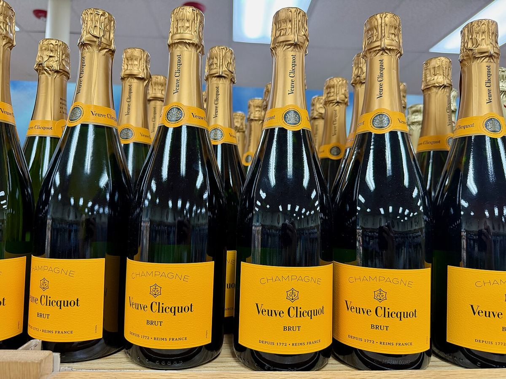

Veuve Clicquot Brut Carte Jaune
Lo champagne senza annata dall’etichetta gialla di Veuve Clicquot, a prevalenza di Pinot Noir e con una quota importante di vini di riserva.

Il Brut Carte Jaune, noto in inglese come Yellow Label, è il vino più diffuso di Veuve Clicquot e uno degli champagne più riconoscibili grazie all’etichetta gialla. Assembla vini di numerosi cru della Champagne, con il Pinot Noir come varietà principale, che apporta struttura, completato da Pinot Meunier e Chardonnay.
Una parte rilevante dell’assemblaggio è costituita da vini di riserva di annate precedenti, che la casa conserva per dare continuità al suo stile. Dopo la seconda fermentazione in bottiglia, il vino affina sui lieviti nelle crayères di Reims prima della sboccatura.
È uno champagne di medio corpo, con più presenza in bocca rispetto ai brut senza annata di stile leggero, adatto come aperitivo e per accompagnare piatti semplici.
Profilo di degustazione
Oro tenue con perlage fine. Aromi di frutta bianca e gialla, come pera e pesca, con note di pasticceria e frutta secca. In bocca unisce freschezza e struttura, con un finale persistente.
Abbinamenti
Aperitivo, gougères, pesce alla griglia, formaggi a pasta molle, pollame
Servizio
8-10 °C, calice da vino bianco o a tulipano